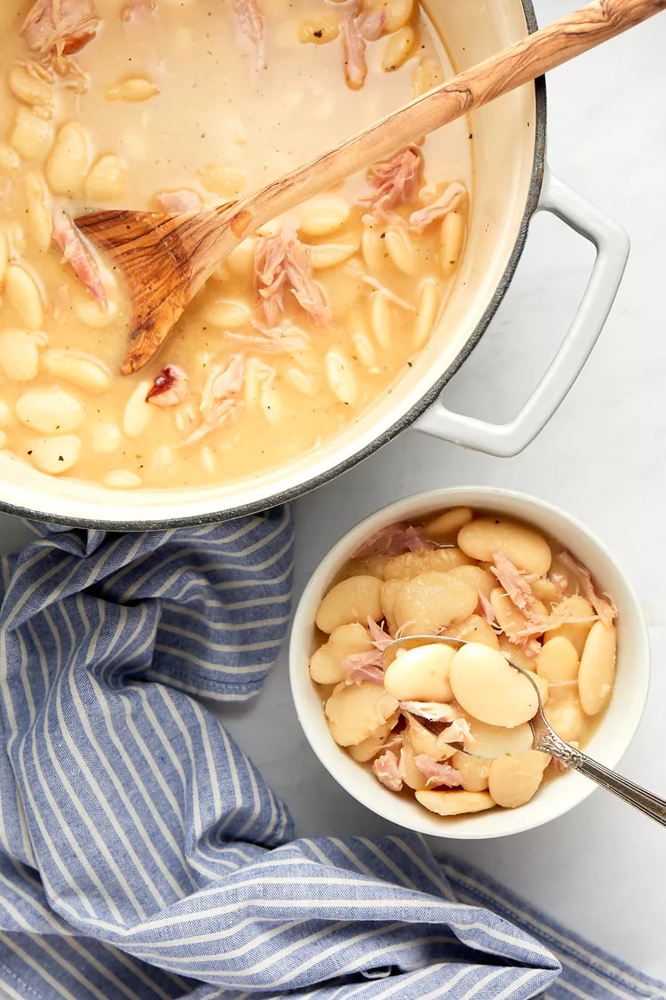

Creamy Lima Beans
- PREP TIME
- COOK TIME
- TOTAL TIME
- SERVINGS
15 mins
2 hrs
2hrs 15 mins
6 to 8 servings

Ingredients
- 1 pound dry large lima beans
- 1/2 large white onion, chopped (about 1 1/2 cups)
- 4 cloves garlic, finely chopped
- 1 tablespoon garlic powder
- 1 tablespoon onion powder
- 2 tablespoons salt
- 1 teaspoon black pepper
- 1 bay leaf
- 2 smoked turkey wings
- 8 cups chicken stock (preferably unsalted or low-sodium)
- Additional salt and pepper to taste
Directions
Step 1
Pick over the beans, removing any dirt or debris. Rinse the beans in a colander; drain.
Step 2
Place the beans, onion, garlic cloves, garlic powder, onion powder, salt, black pepper, bay leaf, and turkey wings in a large Dutch oven or pot.
Step 3
Add the stock. Bring to a boil over medium-high heat.
Step 4
Once it starts to boil, decrease the heat to medium-low. Cover with a lid.
Step 5
Simmer for up to 2 hours or until the beans are tender to your liking. Make sure to stir the mixture a few times while cooking for a creamier sauce.
Step 6
Using tongs, remove the turkey wings and let them cool until you can comfortably handle them. Remove the
cooked meat from the bones using a fork and shred; discard the skin. Place the meat back in the pot.
Remove the bay leaf; discard.
Step 7
Taste the beans and season with additional salt and pepper, if needed.
Serve warm.